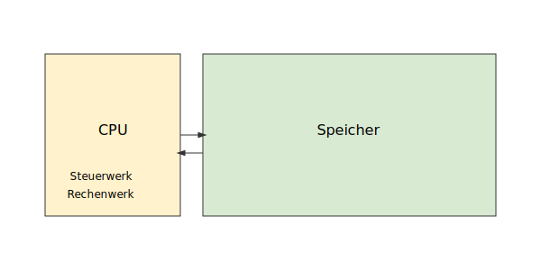

Die Von-Neumann-Architektur
Moderne Computer basieren fast ausnahmslos auf der Von-Neumann-Architektur. Ihr zentrales Merkmal ist, dass sowohl die auszuführenden Befehle (das Programm) als auch die zu verarbeitenden Daten im selben Hauptspeicher abgelegt sind.
Die Hauptkomponenten sind:
- Zentraleinheit (CPU - Central Processing Unit): Das "Gehirn" des Computers. Sie besteht aus:
- Steuerwerk: Interpretiert die Programmbefehle und steuert die Abläufe.
- Rechenwerk (ALU - Arithmetic Logic Unit): Führt arithmetische (z.B. Addition) und logische (z.B. UND, ODER) Operationen aus.
- Register: Extrem schnelle, kleine Speichereinheiten direkt in der CPU zur temporären Aufnahme von Daten und Adressen.
- Hauptspeicher (RAM - Random Access Memory): Ein linear adressierbarer Speicher, der Programme und Daten enthält. Jeder Speicherplatz hat eine eindeutige Adresse.
- Ein-/Ausgabesystem (E/A-System): Ermöglicht die Kommunikation mit der Außenwelt über Peripheriegeräte wie Tastatur, Bildschirm, Festplatte etc.
- Systembus: Ein Bündel von Leitungen, das die CPU, den Hauptspeicher und das E/A-System miteinander verbindet und den Austausch von Daten, Adressen und Steuersignalen ermöglicht.
Der Befehlszyklus: Wie ein Programm ausgeführt wird
Die CPU arbeitet kontinuierlich einen Zyklus ab, um Programme auszuführen. Dieser wird oft als Fetch-Decode-Execute-Zyklus bezeichnet. Das Beispiel der Berechnung z = x + y illustriert dies:
- Fetch (Holen): Das Steuerwerk holt den nächsten Befehl aus dem Hauptspeicher. Die Adresse des Befehls steht im Programmzähler (PC). Beispiel: "Lade den Wert von Speicheradresse 12671 (Variable x) in Register R6".
- Decode (Dekodieren): Das Steuerwerk interpretiert den geholten Befehl, um zu wissen, was zu tun ist.
- Execute (Ausführen): Das Rechen- oder Steuerwerk führt die Operation aus. Dies kann verschiedene Schritte umfassen:
- Daten holen (Operand Fetch): Werte von Variablen (x, y) werden aus dem Hauptspeicher in CPU-Register geladen.
- Berechnung: Die ALU führt die eigentliche Operation aus (z.B. R5 := R6 + y).
- Ergebnis speichern (Write Back): Das Resultat wird aus einem Register zurück in den Hauptspeicher geschrieben.
Nach jedem Befehl wird der Programmzähler (PC) erhöht, damit er auf den nächsten Befehl zeigt. Bei Sprungbefehlen wird der PC auf eine neue Adresse gesetzt.
Wichtige CPU-Register im Detail
Register sind für die Funktion der CPU unerlässlich. Die wichtigsten Typen sind:
- Befehlsregister (Instruction Register): Enthält den Maschinencode des Befehls, der gerade ausgeführt wird.
- Programmzähler (Program Counter, PC): Enthält immer die Speicheradresse des nächsten auszuführenden Befehls. Er bestimmt den Kontrollfluss des Programms.
- Datenregister: Dienen als schneller Zwischenspeicher für Operanden und Ergebnisse. Ein herausgehobenes Register ist oft der Akkumulator, das zentrale Rechenregister.
- Adressregister: Enthalten Speicheradressen, um auf Daten im Hauptspeicher zu zeigen, z.B. der Stack Pointer (Stapelzeiger).
- Programmstatuswort (Program Status Word, PSW): Eine Sammlung von Bits (Flags), die den aktuellen Zustand der CPU beschreiben. Dazu gehören:
- Modus-Bit: Zeigt an, ob die CPU im privilegierten Kernel-Modus (Betriebssystem) oder im eingeschränkten User-Modus (Anwendungsprogramm) läuft.
- Bedingungs-Flags (Condition Codes): Zeigen Ergebnisse der letzten arithmetischen/logischen Operation an (z.B. war das Ergebnis Null, negativ, gab es einen Überlauf?). Diese Flags sind entscheidend für bedingte Sprünge (z.B.
if(x > 0)). - Interrupt-Flag: Gibt an, ob die CPU auf externe Unterbrechungen reagieren darf oder nicht.
Beispiel für verzweigende Rechenausführung
Ein Beispiel für eine Schleife, die den Wert von y so oft zu x addiert, bis x null ist. Die PSW-Flags entscheiden anhand des Vergleichs, ob ein Sprung erfolgt, und der PC wird entsprechend angepasst.
- Initialisierung: R5 := 0
- Schleifenkörper: R6 := R6 - 1
- Bedingte Verzweigung: Wenn R6 > 0, springe zurück zu Schritt 2 (
if R6 > 0: JMP). - Ergebnis speichern: z := R5

Der Rechenzustand & Interrupts
Rechenzustand
Der vollständige Zustand eines laufenden Programms zu einem bestimmten Zeitpunkt lässt sich (vereinfacht) beschreiben durch die Summe der Inhalte aller relevanten Speicherbereiche:
- Der Inhalt des gesamten Hauptspeichers, der dem Programm zugeordnet ist.
- Der Inhalt aller CPU-Register (PC, PSW, Datenregister etc.).
Merke: Wenn man diesen Zustand komplett sichert, kann man eine Berechnung unterbrechen und exakt an derselben Stelle später wieder fortführen. Dies ist die fundamentale Grundlage für Multitasking und Prozessumschaltung (Kontextwechsel).
Interrupts (Unterbrechungen)
Ein Interrupt ist ein Mechanismus, der die normale, sequentielle Abarbeitung von Befehlen unterbricht, um auf ein dringendes Ereignis zu reagieren. Wenn ein Interrupt auftritt, sichert die CPU ihren aktuellen Zustand (mindestens den PC und das PSW), springt zu einer vordefinierten Adresse und führt dort eine spezielle Interrupt-Service-Routine (ISR) aus. Nach Beendigung der ISR wird der gesicherte Zustand wiederhergestellt und das ursprüngliche Programm fortgesetzt.
Arten von Interrupts:
- Hardware-Interrupts: Von E/A-Geräten ausgelöst (z.B. "Daten von Festplatte gelesen" oder "Taste gedrückt").
- Software-Interrupts (Traps): Vom Programm selbst ausgelöst, z.B. bei einem Fehler (Division durch Null) oder einem bewussten Systemaufruf an das Betriebssystem.
- Timer-Interrupts: Von einem Hardware-Timer in regelmäßigen Abständen ausgelöst. Dies ermöglicht es dem Betriebssystem, einem Prozess die CPU zu entziehen (präemptives Multitasking).
Die Speicherhierarchie
Da schneller Speicher (wie Register) teuer und klein ist, während günstiger Speicher (wie Festplatten) langsam ist, organisieren Computer ihren Speicher in einer Hierarchie. Ziel ist es, die durchschnittliche Zugriffszeit zu minimieren, indem häufig genutzte Daten in den schnelleren Ebenen gehalten werden (Caching).
Die typischen Ebenen sind:
- CPU-Register: Schnellster Zugriff (< 1 ns), kleinste Kapazität (< 1 KB).
- CPU-Cache (L1, L2, L3): Sehr schnell (ca. 5 ns), Kapazität einige Megabyte.
- Hauptspeicher (RAM): Flüchtiger Speicher, Zugriffszeit ca. 50 ns, Kapazität mehrere Gigabyte.
- Sekundärspeicher (Festplatten, SSD): Persistent, Zugriffszeiten 0,2–10 ms, Kapazität 100–1000 GB.
- Tertiärspeicher (z.B. Bänder, Archivsysteme): Sehr langsam (10–100 s), Kapazität mehrere Terabyte.
Vom Quellcode zum Programm
Ein in einer Hochsprache (z.B. C, Java) geschriebenes Programm muss mehrere Schritte durchlaufen, bevor es von der CPU ausgeführt werden kann:
- Compiler: Übersetzt den Quellcode in Maschinencode und optimiert dabei Registerausnutzung und Befehlsanzahl.
- Linker: Verknüpft den kompilierten Code mit Bibliotheksfunktionen, entweder statisch oder dynamisch.
- Loader: Lädt die ausführbare Datei in den Hauptspeicher, um die Ausführung durch die CPU zu ermöglichen.
Rolle von Compiler und Linker
- Compiler:
- Bildet höhere Programmiersprachen auf Maschinencode ab (z.B. Schleifen → JMP-Anweisungen).
- Definiert Speicherbereiche für Programmobjekte.
- Optimiert Befehle und Registerausnutzung, um Hauptspeicherzugriffe zu minimieren.
- Fügt Laufzeitprüfungen ein (z.B. Array-Grenzen).
- Generiert Aufrufe an Bibliotheksfunktionen und Systemaufrufe.
- Linker:
- Bindet ergänzende Programmteile aus Bibliotheken statisch oder lädt sie dynamisch zur Laufzeit.
- Erzeugt eine ausführbare Datei mit allen notwendigen Abhängigkeiten.
Zusammenfassung
- Ein „Programm“ ist auf Maschinenebene eine Folge von Befehlen zum Lesen, Schreiben und Berechnen von Hauptspeicher- und Registerinhalten.
- Ein „Programmzustand“ setzt sich aus Hauptspeicher- und Registerinhalten sowie der Adresse des nächsten Befehls zusammen.
- Befehle verändern Dateninhalte („Werte“) und Kontrollfluss („nächster Befehl“) eines Programms.
- Dienstprogramme (Compiler, Linker, Loader) unterstützen den Schritt von der höheren Programmiersprache zur maschinenverständlichen Ausführung.